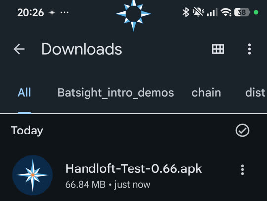
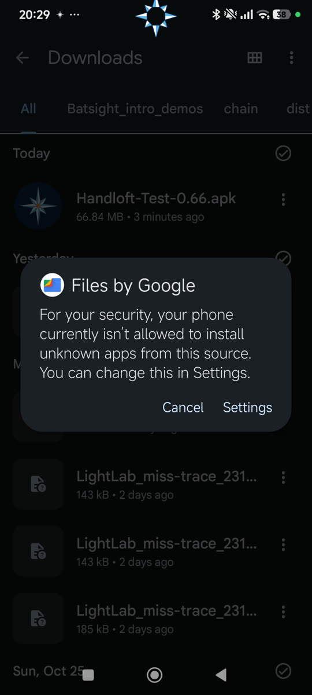
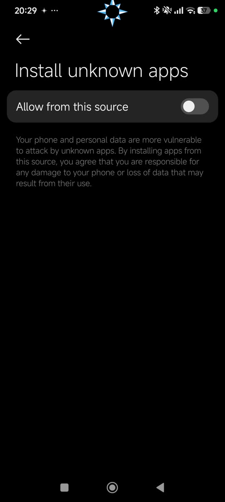
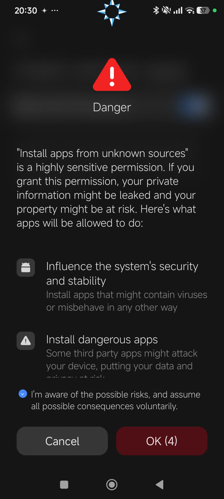
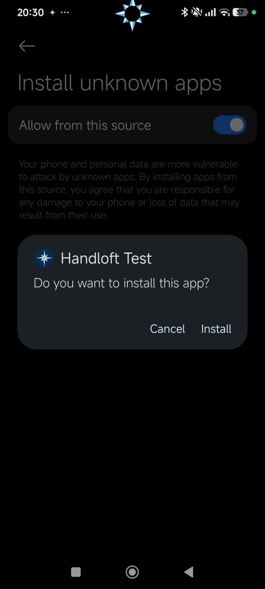
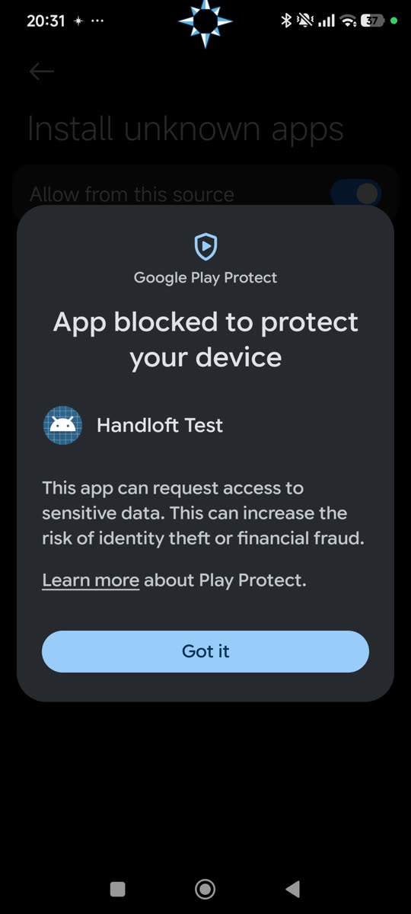
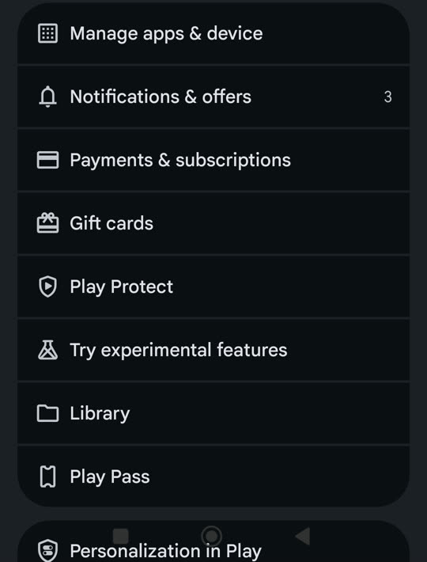
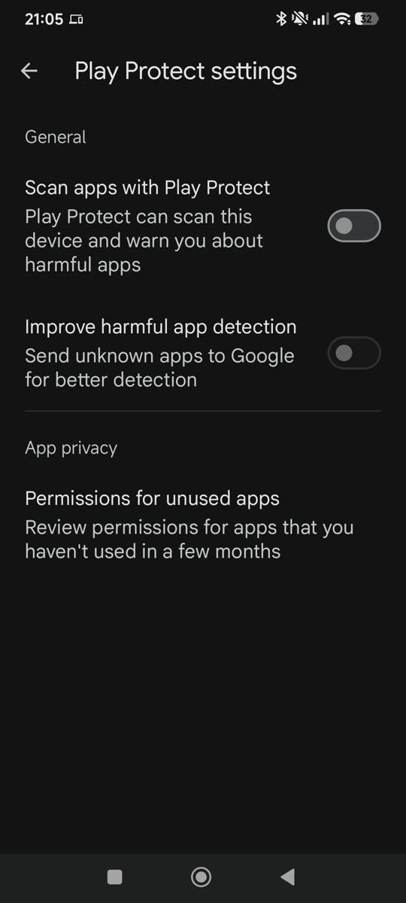
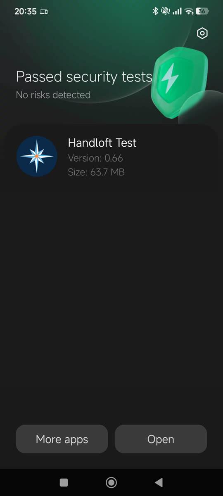
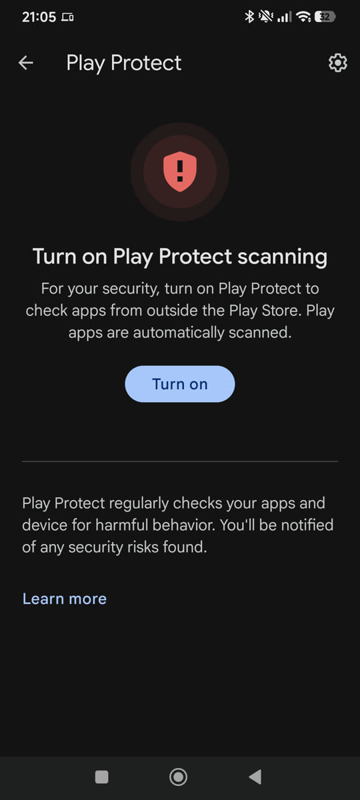

Thank you for being one of the first.
Gracias por ser de los primeros.
Handloft is made by Kithe. It is free, and you are one of the first people to try it.
Handloft la hace Kithe. Es gratis y eres de las primeras personas en probarla.
Your phone will show you some extra warnings. That is because Handloft is not in the Play Store yet. Android shows them for every app that comes from outside it. This page walks you through each one, and what to tap. Take your time.
Tu teléfono te mostrará algunos avisos extra. Es porque Handloft todavía no está en la Play Store. Android los muestra con toda app que viene de fuera. Esta página te lleva por cada uno, y te dice qué tocar. Sin prisa.
What this is
De qué se trata
Handloft lets you use your Android phone with your hand, without touching it. The app itself teaches you how, the first time you open it. This page only gets it installed.
- An Android phone with Android 11 or newer.
- The Gmail account you gave to the person who invited you. It is the one that can open the download folder.
- Your personal invite code. It arrives in the WhatsApp message from the person who invited you, and looks like HL-7KQ3P. Keep that message handy.
Handloft te deja usar tu teléfono Android con la mano, sin tocarlo. La propia app te enseña cómo la primera vez que la abres. Esta página solo sirve para instalarla.
- Un teléfono Android con Android 11 o más nuevo.
- La cuenta de Gmail que le diste a quien te invitó. Es la que puede abrir la carpeta de descarga.
- Tu código personal de invitación. Llega en el mensaje de WhatsApp de quien te invitó y se ve así: HL-7KQ3P. Ten ese mensaje a la mano.
Install it, step by step
Instálala, paso a paso
About 3 minutes. Do this on the phone you will test with. Use the Gmail account you gave to the person who invited you.
Unos 3 minutos. Hazlo en el teléfono con el que vas a probar. Usa la cuenta de Gmail que le diste a quien te invitó.
- Open the download folder in the Google Drive app. The app is inside: Handloft-Test-0.67.apk.Abre la carpeta de descarga en la app Google Drive. Dentro está la app: Handloft-Test-0.67.apk.
Open the folderAbrir la carpeta
If it says you need access, you are signed in with a different Gmail. Switch account at the top right, or tell the person who invited you which address to use.Si dice que necesitas acceso, estás con otro Gmail. Cambia de cuenta arriba a la derecha, o dile a quien te invitó qué correo usar. - Next to Handloft-Test-0.67.apk tap the three dots, then Download. Junto a Handloft-Test-0.67.apk toca los tres puntos y luego Descargar.
- Open Files by Google (or your phone’s Files app), go to Downloads, and tap the file. Abre Files de Google (o la app de Archivos de tu teléfono), ve a Descargas y toca el archivo.

The real screen on a POCO phone. Yours may look a little different.
La pantalla real en un teléfono POCO (en inglés). La tuya puede verse un poco distinta.
- Warning 1Aviso 1“For your security, your phone currently isn’t allowed to install unknown apps from this source.”
Tap Settings, turn on Allow from this source, then go back. This only lets that one app (Drive or Files) open installers. You can turn it off afterwards.“Por tu seguridad, tu teléfono no puede instalar apps desconocidas de esta fuente.”
Toca Configuración (o Ajustes), activa Permitir desde esta fuente y regresa. Solo le permite a esa app (Drive o Archivos) abrir instaladores. Puedes desactivarlo después.

The real screen on a POCO phone. Yours may look a little different.
La pantalla real en un teléfono POCO (en inglés). La tuya puede verse un poco distinta.
Xiaomi, POCO and Redmi phones then show a red “Danger” page. That is normal: tick I’m aware of the possible risks…, wait for the countdown, and tap OK.Los teléfonos Xiaomi, POCO y Redmi muestran después una página roja de “Peligro”. Es normal: marca Soy consciente de los posibles riesgos…, espera la cuenta regresiva y toca OK.
The real screen on a POCO phone. Yours may look a little different.
La pantalla real en un teléfono POCO (en inglés). La tuya puede verse un poco distinta.
- Tap Install.Toca Instalar.

The real screen on a POCO phone. Yours may look a little different.
La pantalla real en un teléfono POCO (en inglés). La tuya puede verse un poco distinta.
- Warning 2Aviso 2Only if Google Play Protect says “App blocked to protect your device” and offers only Got it. It does this because Handloft asks to control the screen and to send its report, and it is not from the Play Store.
1. Tap Got it.
2. Open the Play Store, tap your profile picture (top right), then Play Protect.
3. Tap the gear (top right) and turn off Scan apps with Play Protect.
4. Go back to Files, tap the file again and tap Install.
Step 8 turns Play Protect back on.Solo si Google Play Protect dice “App bloqueada para proteger tu dispositivo” y solo ofrece Entendido. Lo hace porque Handloft pide controlar la pantalla y enviar su reporte, y no viene de la Play Store.
1. Toca Entendido.
2. Abre la Play Store, toca tu foto de perfil (arriba a la derecha) y luego Play Protect.
3. Toca el engrane (arriba a la derecha) y desactiva Analizar apps con Play Protect.
4. Regresa a Archivos, toca otra vez el archivo y toca Instalar.
El paso 8 vuelve a encender Play Protect.


The real screen on a POCO phone. Yours may look a little different.
La pantalla real en un teléfono POCO (en inglés). La tuya puede verse un poco distinta.
- Tap Open. You are in.Toca Abrir. Ya estás dentro.

The real screen on a POCO phone. Yours may look a little different.
La pantalla real en un teléfono POCO (en inglés). La tuya puede verse un poco distinta.
- If you turned Play Protect off: open the Play Store › profile picture › Play Protect and tap Turn on. Handloft stays installed.Si apagaste Play Protect: abre la Play Store › foto de perfil › Play Protect y toca Activar. Handloft se queda instalada.

The real screen on a POCO phone. Yours may look a little different.
La pantalla real en un teléfono POCO (en inglés). La tuya puede verse un poco distinta.
Open it
Ábrela
That is the install done. From here on, the app guides you. First it asks for your invite code: type the one from the WhatsApp message you received (it looks like HL-7KQ3P). If you cannot find it, or it does not work, write to the person who invited you. Then the app explains the permissions it needs and what this test sends, and you choose to agree or not.
Con eso termina la instalación. Desde aquí, la app te guía. Primero te pide tu código de invitación: escribe el del mensaje de WhatsApp que recibiste (se ve así: HL-7KQ3P). Si no lo encuentras, o no funciona, escríbele a quien te invitó. Después la app te explica los permisos que necesita y lo que envía esta prueba, y tú decides si aceptas o no.